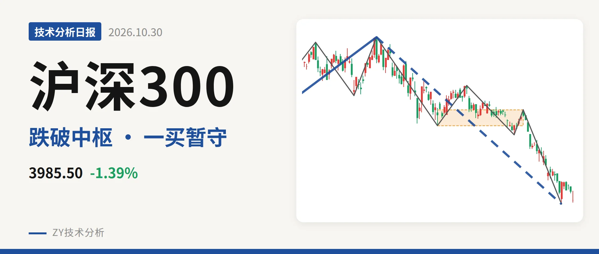
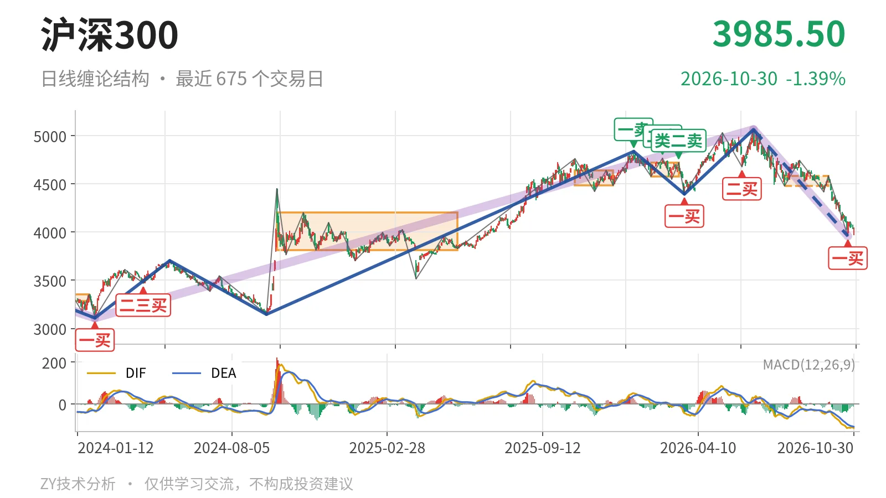
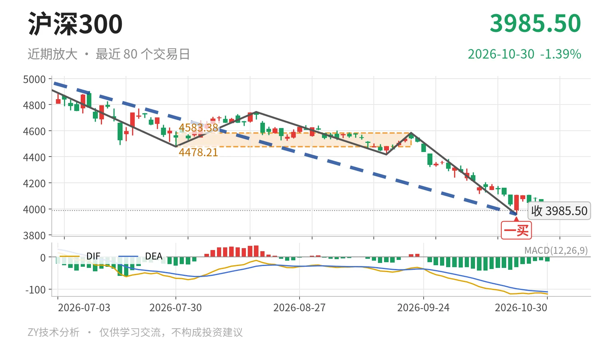

沪深300｜中枢破位4478，3958一买暂守

最近日线中枢 4478.21—4583.38点，收盘位于中枢之下
一句话：日线下跌未结束，跌破最近中枢，结构偏弱
📉 走势结构：更大级别上行未坏，日线回落未结束
更大级别上，2024年2月2日至2026年6月23日的上涨段从3108.35点涨至5064.27点，上涨约63%，至今还在延续；6月23日以来的下跌段已跌21.8%，没有结束，属于对这一段上涨的回落。日线线段上，6月23日至10月23日的下跌线段内含5笔，尚未走完。10月26日至30日虽出现最高4110.00点的反抽，但未成笔，最低3968.86点守住10月23日低点，暂时只能算下跌段内的弱反弹。

📍 中枢与位置：下破最近中枢，回到大中枢内
最近日线笔中枢为7月30日至9月22日的4478.21—4583.38点，中轴4530.80点，尚未完成。最新收盘3985.50点低于下沿4478.21点约11.0%，低于中轴约12.0%，属中枢下破。这个位置也回到2024年10月8日至2025年5月30日的中枢3812.32—4200.91点内部，且在中轴4006.61点下方。中枢从2月3日至3月17日的4578.21—4720.86点下移至4478.21—4583.38点，短期重心向下。
🔄 买卖点：顶部卖点已降级，当前只看3958一买
1月13日一卖4836.95点、2月25日二卖4766.56点、3月17日类二卖4720.86点一个比一个低，但3月24日至6月23日上涨线段创5064.27点，这些卖点只对应日线笔级别。6月23日回落后，3月24日一买4394.29点、6月8日二买4677.57点均已跌破。当前关键是10月23日的一买3958.14点，月末最低3968.86点未创新低，该一买暂未被破坏；但后继反弹未成笔，仍只能视为下跌段内的抵抗。

📊 背驰：面积收敛，DIF不支持完整背驰
10月23日一买只有部分背驰基础。取6月23日至7月30日与9月22日至10月23日两段下跌笔比较，价格从4478.21点下移至3958.14点创了新低；绿柱面积由650缩到494，DIF低点却由-66.5降至-115.1。这是面积收缩、DIF新低，不是完整的“新低不新弱”。最新DIF仍为-115.4，处在零轴下，月内反弹高点4110.00点离4478点尚远，背驰未形成扭转。
🔍 关键位置观察：反抽不过4478存三卖，下破3958则延伸
上方先看4478点附近。反抽若回不到4478点上方，结构上构成三卖；重新站上4478点，回落更可能转为中枢扩展。下方看3958点附近，若再创低点，6月23日以来下跌段继续，10月23日一买失效，下一参考位为3812点附近。结构判断：偏弱，但3958点一线有初步抵抗。
⚠️ 本文为基于公开行情数据的缠论技术结构记录，由程序自动计算并生成，仅供学习交流，不构成任何投资建议。市场有风险，投资需谨慎。